✦
Fresh Sourcing
Selected raw materials with attention to freshness and consistency.
Premium dehydrated ingredients prepared with care to retain the natural aroma, taste and character of fresh produce.
Siyaram Foods is focused on supplying dependable dehydrated onion and garlic ingredients for food manufacturers, distributors and buyers.
Our approach follows the same product philosophy as the reference business: source quality agricultural produce, process it carefully and deliver consistent ingredients suitable for domestic and international applications.
Talk to our team →Selected raw materials with attention to freshness and consistency.
Careful dehydration designed to preserve natural character.
Sorting, inspection and packing built around dependable supply.
Bulk formats for food businesses and export-oriented buyers.
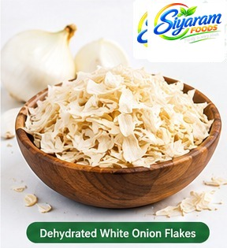
A-grade dehydrated white onion flakes for food processing and seasoning.
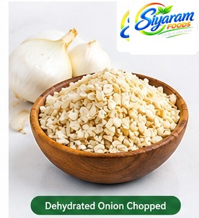
Chopped white onion pieces for prepared foods and seasoning blends.
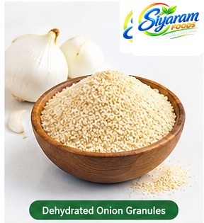
Uniform white onion granules with a characteristic onion aroma.
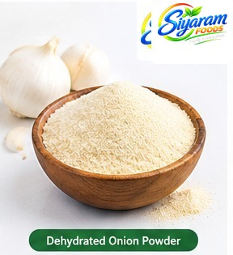
Fine white onion powder for sauces, snacks and dry mixes.
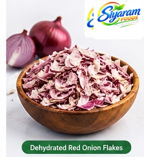
Dehydrated red onion flakes for food manufacturing and seasoning.
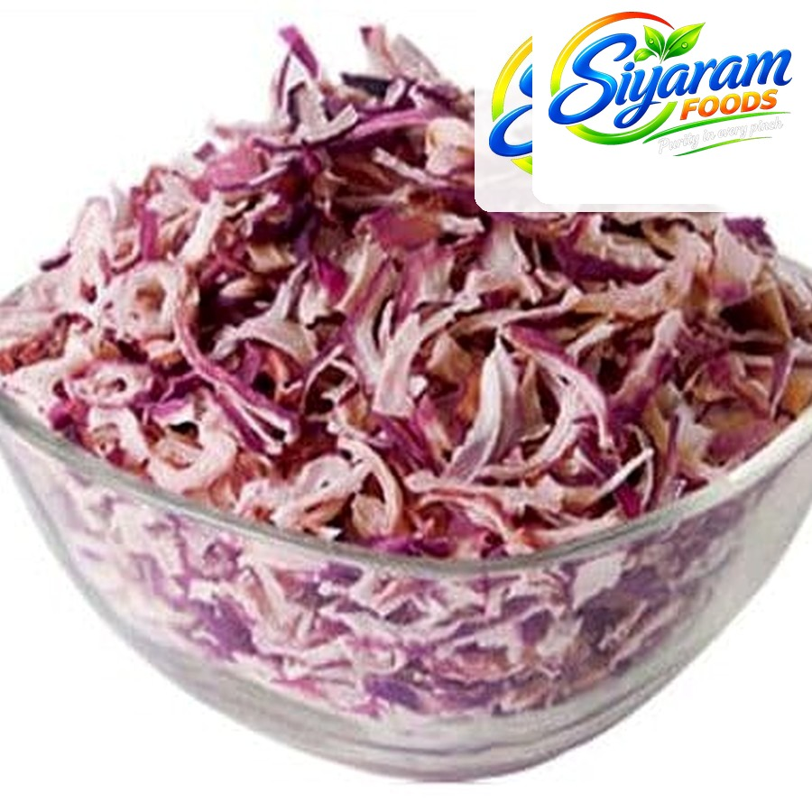
Pink onion flakes with natural colour and characteristic aroma.
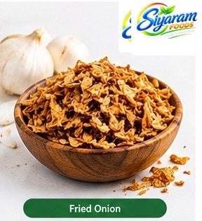
Crispy fried onion pieces for toppings, mixes and prepared foods.
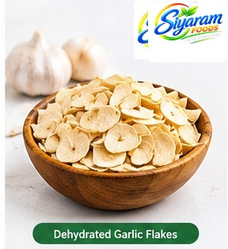
Dehydrated garlic flakes for seasoning and food processing.
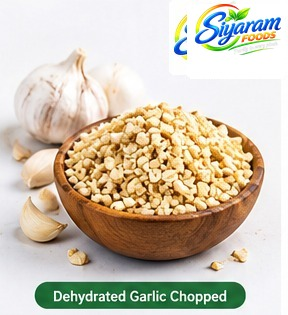
Chopped dehydrated garlic for convenient use in food products.
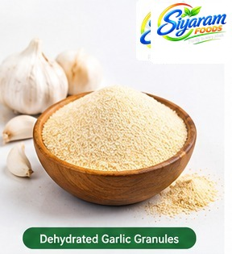
Granulated dehydrated garlic for blends and seasoning applications.
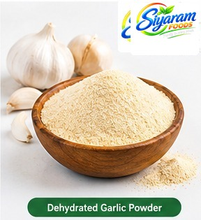
Fine garlic powder for sauces, seasonings and food mixes.
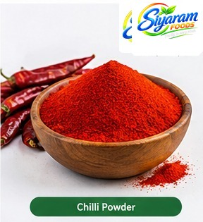
Red chilli powder for seasoning and food blends.
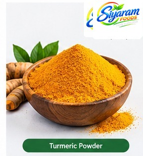
Turmeric powder for spice mixes and culinary applications.
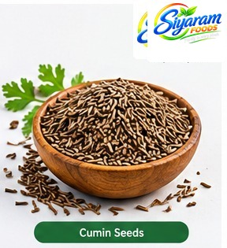
Whole cumin seeds for spice blends and culinary applications.
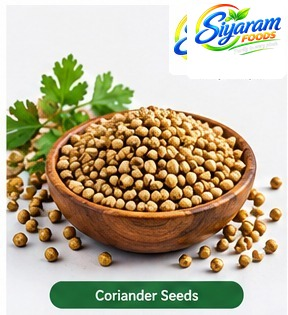
Whole coriander seeds with a natural aromatic flavour.
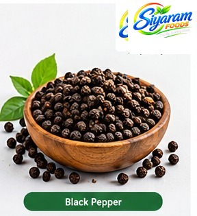
Whole black peppercorns for seasoning and spice blends.
A clean, systematic workflow helps maintain product consistency from sourcing through dispatch.
Fresh and suitable agricultural raw material is selected and prepared.
Raw material is cleaned and prepared for controlled processing.
Accurate cuts are prepared for the dehydration stage.
Controlled dehydration reduces moisture while retaining product character.
Material is separated and checked for consistent final quality.
Finished products are packed to customer and shipping requirements.
Product formats can be supplied to suit food manufacturing requirements.
Designed for distributors, manufacturers and export-oriented buyers.
Clear communication from enquiry through dispatch.
For product enquiries, specifications, packaging or bulk requirements, send us your details and our team can get back to you.